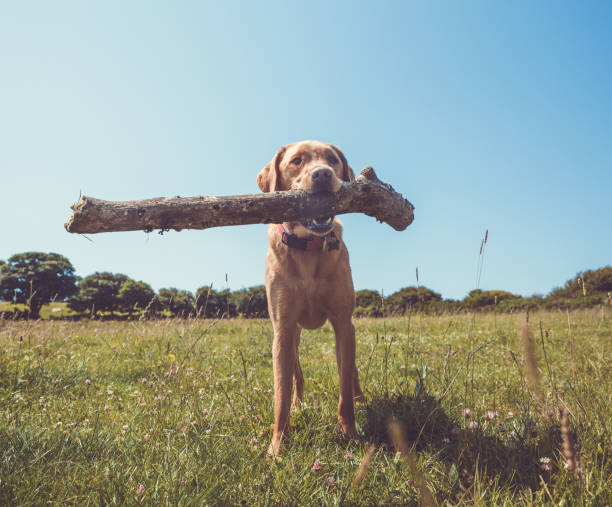
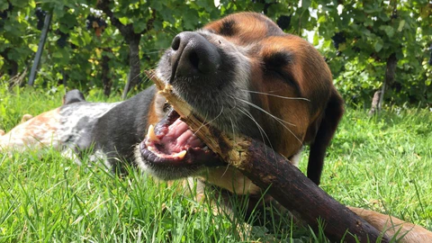

Sticks - Rocky and Charlie's Favorite Finds

Charlie’s Big Stick Finds: Charlie loves discovering the biggest sticks he can find, just like this dog here. Whether it’s in the park or on a walk, he proudly carries them home like prized treasures.

Rocky the Shredder: Rocky has a knack for turning sticks into sawdust, just like this basset hound. He enjoys every moment of chewing them to shreds, leaving behind little piles of stick confetti.

Sticks Everywhere: No matter where we go—parks, woods, or even the backyard—Charlie and Rocky always manage to find the coolest sticks. It’s like they have a built-in radar for stick-hunting adventures!
Add a Favorite Stick
Use the form below to add sticks that Rocky and Charlie, or even your own dogs have found and loved!